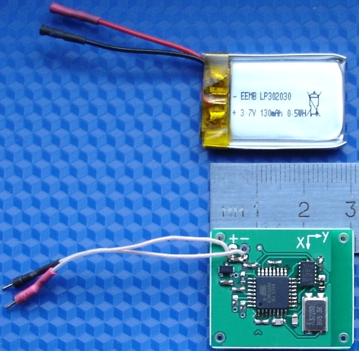
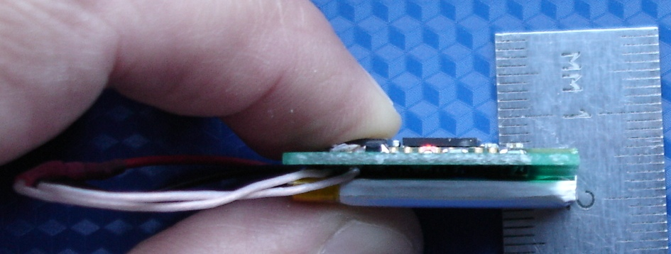

e-mail: post4inet@gmail.com |
| акселерометры | - обзор предлагаемых устройств |
| прецизионный акселерометр |
-
измерение малых ускорений,
-
широкий динамический диапазон
|
| акселерометр Bluetooth | ВИДЕО Акселерометр Bluetooth -график в реальном времени |
| акселерометр USB | ВИДЕО 1 Измерения
акселерометром
USB с памятью =================== ВИДЕО 2 Синхронная запись ДВУМЯ акселерометрами USB |
| акселерометр RS-485 | ВИДЕО Измерения акселерометром RS-485 |
| акселерометры с аналоговыми выходами | |
| Ударные испытания транспорта | ВИДЕО Испытания ж/д цистерны на удар |
| Ударные испытания оборудования | ВИДЕО Испытания велосипедных шлемов на удар |
| Программное обеспечение |
| Параметры акселерометров |
| Применение акселерометров |


Акселерометр Bluetooth 16g и акселерометр Bluetooth 200g изготавливаются на одинаковых платах, их отличие в диапазонах измеряемых ускорений. Остальные параметры и программное обеспечение идентичны.
ВИДЕО Акселерометр Bluetooth - измерение в автономном режиме с графиком в реальном времени
позволяет
определить следующие параметры измерения:
- диапазон измеряемых ускорений
акселерометра Bluetooth 16g USB ±2g, ±4g, ±8g или ±16g,
акселерометра Bluetooth 200g USB ±25g, ±50g, ±100g или ±200g,
-
число осей акселерометра,
по которым
выполняется измерение (использование
не всех 3-х осей актуально при построении графика по большому числу
выборок - при построении
графика по массивам данных в несколько
мегабайт требуется
ощутимое время, если информативны результаты, например, только по одной
оси, время потсроения графика можно сократить втрое),
- частоту выборки акселерометра 3200 Гц, 1600 Гц, 800 Гц, 400
Гц, 200Гц, 100Гц,
50Гц, 25 Гц, 12,5Гц или 6,25 Гц
- время измерения / число выборок, ограниченные только объемом
свободной оперативной памяти вашего компьютера.
Программное обеспечение позволяет
управлять
акселерометром, считывать результаты измерения, отображать их в виде
графиков ускорения и сохранять полученные данные в виде файлов.
Компьютерное
приложение, работающее с
акселерометром, обеспечивает удобные функции: